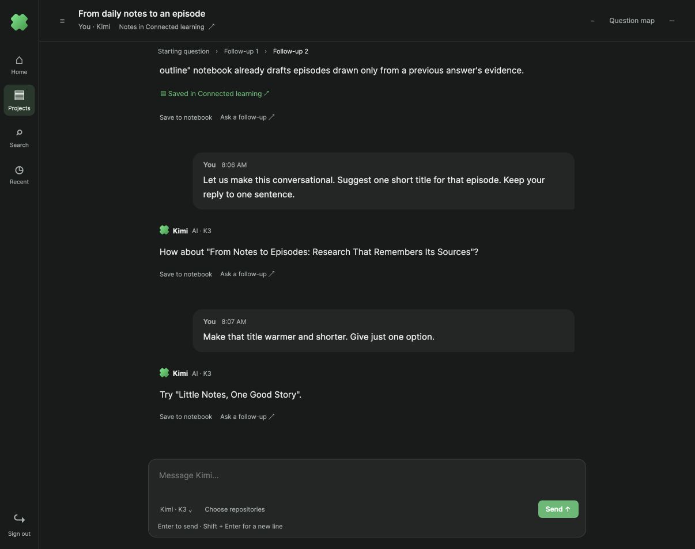
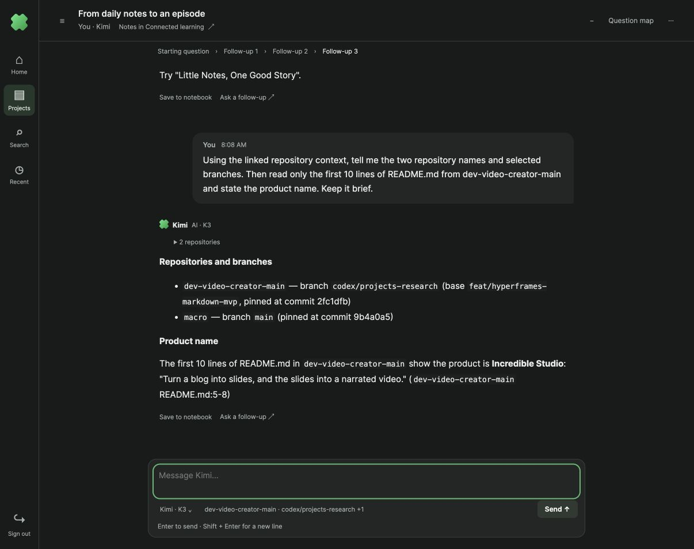
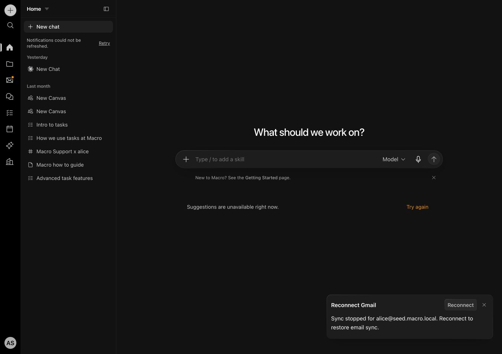

Visible-browser walkthrough on the parallel stack, port 4291, 18 October 2026.

Two consecutive Kimi K3 answers completed using the same native session ID and workspace. Repository choices for dev-video-creator-main (codex/projects-research) and macro (main) survived refresh. Session tests cover changed-context isolation, branching, stale completion and replacing old packet/output files. Keyboard tests cover Enter, multiline input, IME composition and disabled sends.
Production build passed. The full suite passed 237 files / 1554 tests; additional focused runtime and keyboard checks passed 20 tests. The Docker storage check could not start because Docker reported no space left on device.

Direct New chat composer, a persistent workspace rail, a mixed resource list and optional splits informed this iteration. Macro’s local document view could not load its document because its sync backend was unavailable; successful document editing was not verified.

Human invitations and real-time collaboration are future work. This iteration adds conversation identity and local-agent continuity; it does not implement multi-user access.